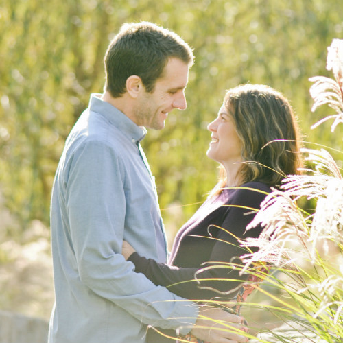

Katie Trifiletti and Ryan Young will be wed on June 2, 2018 at Moyo, 4335 Skippack Pike, Schwenksville, PA 19473.
If you are looking for a hotel room, they have been blocked off at the Courtyard by Marriott in Lansdale, 1737 Sumneytown Pike, Lansdale, PA 19446.
Book a room online or call 1-800-321-2211 and ask for the “Trifiletti/Young Wedding Room Block.” A free shuttle to Moyo will be provided for guests.
Please keep scrolling for more information.
Katie and Ryan met over 25 years ago on a sunny summer day in Blue Bell, Pennsylvania. It was the summer of 1992, grunge was dominating the airwaves, and Ryan fell in love at first sight with Katie's beautiful blue eyes. So much so that he immediately asked her out to dinner on his father's dime, of course. They were both still teenagers.
The budding relationship included typical young love shenanigans like aimless car rides listening to INXS, crashing on dormitory floors, and misguided fraternity parties. They were too immature to realize how good they had it and lost touch in the frenzied world of collegiate life.
The two of them fumbled through young adulthood learning what they didn't want. Finally in 2009 they were reconnected through a chance meeting between Katie and Ryan’s sister, Kirsten. With the help of Katie’s mother Cathy, the two dated for the next 8 months. After rekindling a lost connection and falling back in love, sadly the time was not right.
The stars misaligned a few other times and the relationship seemed doomed when Ryan decided to relocate to the west coast. But after living what many would classify a dream life, he still wasn't happy. All he wanted was that. He knew Katie was still out there.
After receiving an email from her, he decided to respond in person. On New Year’s Day, 2017 Ryan appeared at Katie’s door and never looked back. He immediately found a job in Philadelphia and came home. It was time.
After getting her father Tony’s blessing, the two were engaged on July 3rd in Chincoteague, Virginia. The couple now live together in Wissahickon with Petey, a cat who thinks he’s a dog. They will be married on June 2, 2018 in Schwenksville, Pennsylvania.

Katie and Ryan had their engagement photos taken at Prophecy Creek Park in Ambler, PA.